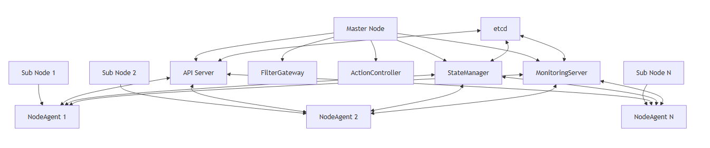

PICCOLO Clustering System¶
Lightweight Container Orchestration Optimized for Embedded Environments
| Document No. | PICCOLO-CLUSTERING-HLD-2025-001 |
| Version | 1.0 |
| Date | 2025-09-04 |
| Author | PICCOLO Team |
| Classification | HLD (High-Level Design) |
Project Overview¶
-
Project Name
PICCOLO Clustering System
-
Purpose / Background
Development of a lightweight container orchestration cluster system optimized for embedded environments
-
Main Features
Node management, cluster configuration, status monitoring, inter-node communication
-
Target Users
Embedded system developers, administrators, operators
Purpose¶
The PICCOLO Clustering System is designed to implement a distributed container management system optimized for embedded environments.
- Provide a lightweight cluster architecture that operates efficiently in resource-constrained environments
- Implement seamless communication and status management between master and sub nodes
- Build a cluster system resilient to network instability
- Provide an operational model optimized for small-scale clusters
Key Features¶
-
Node Management
- Manage master-sub node structure
- Node registration and authentication
- Node status monitoring and management
- Node system readiness verification
-
Cluster Topology Management
- Configure embedded cluster topology
- Configure hybrid cloud connections
- Connect multiple embedded clusters
- Configure geographically distributed clusters
-
State Synchronization
- Manage state information based on kvstore
- Synchronize state information between nodes
- Detect and notify state changes
- Support offline mode and resynchronization upon reconnection
-
Deployment and Operations
- Automatic deployment and installation of NodeAgent
- System checks and readiness verification
- Heartbeat-based node status monitoring
- Fault detection and recovery
Scope¶
- Small-scale embedded clusters of 2–10 nodes
- Communication management between master and sub nodes
- Integration between cloud nodes and embedded nodes
- Podman-based container monitoring and management
Architecture¶
The PICCOLO Clustering System is based on a master-sub node structure and adopts a lightweight design optimized for embedded environments.
System Structure¶

Core Components¶
| Component | Role | Interaction |
|---|---|---|
| API Server | Cluster management, node registration, policy distribution | NodeAgent, StateManager, kvstore |
| NodeAgent | Node status monitoring, communication with master node | API Server, StateManager, MonitoringServer |
| StateManager | Cluster state management and synchronization | API Server, NodeAgent, kvstore |
| kvstore | Cluster state information storage | All components |
| Installation Script | Deploy and configure NodeAgent | Node system |
| System Check Script | Verify node readiness | Node system |
Technology Stack¶
| Layer | Technology | Description |
|---|---|---|
| Core Service | https://www.rust-lang.org/ | High-performance, memory-safe core service implementation language |
| Communication Protocol | https://grpc.io/ | Efficient protocol for master-sub node communication |
| State Storage | RocksDB | Distributed key-value store for cluster state management |
| Container Runtime | https://podman.io/ | Daemonless lightweight container management tool |
| Service Management | https://systemd.io/ | Node service management and auto-start configuration |
| Deployment Tool | [Bash scwww.gnu.org/software/bash/ | Automation tool for node installation and configuration |